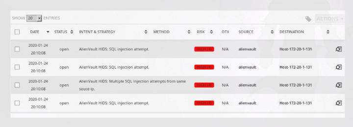

21. Logging and Monitoring Security Events
Events
Events are actions that occur within the system environment and cause measurable or observable changes in one or more system elements or resources.
Logging creates a computational cost but is valuable for determining accountability. Proper design of logging environments and regular log reviews are best practices for any type of computer system. Major control frameworks emphasize the importance of organizational logging practices.
Event

Event Details

Raw Log

Information Recorded in Logs
Information that may be recorded and reviewed includes:
- User IDs
- System activities
- Dates and times of key events (e.g., logon and logoff)
- Device and location identity
- Successful and rejected system and resource access attempts
- System configuration changes and system protection activation and deactivation events
Logging and Monitoring
Logging and monitoring the health of the information environment helps identify inefficient or improperly performing systems, detect compromises, and provide a record of how systems are used.
Robust Logging Practices
Robust logging practices help correlate information from diverse systems to understand the relationship between activities.
Log reviews help identify security incidents, policy violations, fraudulent activities, and operational problems near the time they occur. They also support audits, forensic analysis related to internal and external investigations, and organizational security baselines.
Reviewing historical audit logs can determine whether a vulnerability (weakness in a system) has previously been exploited.
Organizations should create components of a log management infrastructure and determine how they interact. This helps preserve the integrity of log data and maintain the confidentiality of log data.
Controls are implemented to protect against unauthorized changes to log information. Operational problems with logging facilities may involve altered recorded messages, edited or deleted log files, or log storage capacity being exceeded.
Organizations must follow log retention policies required by law, regulations, and corporate governance. Because attackers may attempt to hide evidence of their attacks, policies and procedures should ensure the preservation of original logs. Logs also contain valuable and sensitive information, so measures must be taken to protect log data from malicious use.